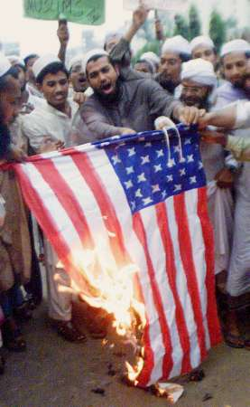

|
|
Religious Extremism and Nationalism in
Bangladesh
Part Four
By Bertil Lintner
Conclusion
In December 2001, Maulana Ubaidul
Haq, the khatib (cleric) of Bangladesh's national mosque, Baitul Mukarram, and
a Jamaat associate, publicly condemned the US war on terror and urged
followers to wage a holy war against the USA. "President Bush and America
is the most heinous terrorist in the world. Both America and Bush must be
destroyed. The Americans will be washed away if Bangladesh's 120 million
Muslims spit on them," the cleric told a gathering of hundreds of
thousands of Bangladeshi Muslims which included several high-ranking officials
in the new government that took over in October 2001. (58)
Despite the virulent rhetoric, it is highly unlikely
that Bangladesh's 120 million Muslims would spit on the Americans, or wage a
holy war against anybody. Bangladesh’s secular roots are holding, at least
for the time being. But the country's Islamic extremists are becoming more
vocal and daring in their attacks on "infidels," a worrying sign in
what is basically a very tolerant society. And it is not the number of
extremists that matters - even a small group can spread fear and terror - but
how well-organized and dedicated they are.
Bangladesh's Islamic extremists are becoming better organized, as the May
meeting at Ukhia of nine militant groups shows. The proliferation of small
arms, and an ensuing increase in violence of all kinds especially in that part
of the country, is also a growing concern. It prompted the country's donors,
which met in Paris in March 2002, to tag aid to an improvement in the law and
order situation.
In mid-2001,the estimated number of illegal arms in Bangladesh was 250,000
of which only 5,481 were recovered during a crackdown in the lead-up to the
general election in October 2001. (59) In early 2002, three leading local
human rights groups in Bangladesh reported that a total of 258 people were
murdered in March alone of which 39 were political killings. In the month of
February, the number of murders was 336, including a journalist, according to
Bangladeshi NGO the Institute of Democratic Watch. (60)
A culture of violence, especially among the young, is emerging, and many young
Islamic militants now are armed. The role of the madrassas in shaping the next
generation of Bangladeshis also cannot be underestimated. By including the
Jamaat in her cabinet, Khaleda Zia is playing with fire.
On the other hand, Bangladesh remains heavily dependent on foreign aid, and
cannot afford to antagonize its most important donor countries, mainly Japan
and the West. It should, therefore, be in the government's interest to contain
the spread of Islamic extremism.
But so far, very little has been done to counter the propaganda and
activities of the extremists, and Khaleda Zia has publicly - and angrily -
stated in response to the inclusion of two Jamaat ministers in her cabinet
that "there are no talibans in my government." (61) By contrast,
even in the streets of Dhaka, activists of the Jamaat, ICS and HUJI used to
proudly identify themselves as "Bangladeshi talibans," although they
stopped using that label, at least in public, following the September 11,
2001, attacks in New York and Washington.
Some Western diplomats in Dhaka also tend to downplay the extremist threat,
viewing local militant Islamic movements as rather insignificant fringe
groups. During a breakfast meeting in May 2002 in Washington sponsored by the
US Bangladesh Advisory Council, Mary Ann Peters, the ambassador of the United
States to Bangladesh, rejected reports of a growing extremist threat.

She termed a report in the April 2, 2002, issue of the Wall Street Journal
as "an example of lack of understanding on the part of journalists
covering the country's political and social structure." She went on to
criticize a similar story in the April 4, 2002, issue of the Far Eastern
Economic Review, and called the reporter "lazy" for not working hard
enough on the subject and for his failure to give any "clue" in
the article that might help make further investigations. She also asserted
that media reports about violence against the Hindu community were
"exaggerations of facts on the ground." The US embassy in Dhaka had
sent its officers to verify the media reports, and that in all cases it was
found that the actual situation was less worrisome than what they appeared to
be, she said. (62)
It is uncertain whether the US ambassador's statements were motivated by a
desire to be overly diplomatic, or if they were based on poor intelligence.
But such denials will only exacerbate what undoubtedly is a growing problem.
It is also important to emphasize that the rise of religious extremism and
intolerance in Bangladesh is not just a side effect of military politics.
According to Enayetullah Khan, editor of the Bangladesh weekly Holiday,
the issue reflects the struggle of a young and fragile nation to find a
national identity: "We're having a bit of an identity crisis here. Are we
Bengalis first and Muslims second, or Muslims first and Bengalis second? This
is the problem. And when Muslim identity becomes an Islamic identity we're in
real trouble." (63)
As Indonesia - another country that until recently was considered a moderate
Muslim state - has shown, an economic collapse or political crisis can give
rise to militants for whom religious fanaticism equals national pride; and a
way out of misrule, disorder and corrupt worldly politics. ( Concluded
)
[The End]
Appendix: Main Islamic groups in Bangladesh
Jamaat-e-Islami. A political party that dates back to the British
colonial era, and the (East) Pakistan period (1947-1971). It supported
Pakistan against the Bengali nationalists during the liberation war, and most
of its leaders fled to (West) Pakistan after Bangladesh's independence in
1971. Its then amir, or leader, Gholam Azam, fought against the freedom
fighters in 1971, but returned to Bangladesh a few years later. In December
2000, Motiur Rahman Nizami, another former pro-Pakistani militant, took over
as amir of the Jamaat. In the October 2001 election, the Jamaat emerged as the
third largest party with 17 seats in the parliament and two ministers in the
new coalition government. The Jamaat's final aim is an Islamic state in
Bangladesh, although this will be implemented step by step.
Islami Chhatra Shibir (ICS). Jamaat's youth organisation. Set up in
1941, it became a member of the International Islamic Federation of Student
Organisations in 1979. ICS is also a member of the World Assembly of Muslim
Youth and has close contacts with other radical Muslim youth groups in
Pakistan, the Middle East, Malaysia and Indonesia. One of its main strongholds
in Bangladesh is at the university in Chittagong, and it dominates
privately-run madrassas all over the country. It has been involved in a number
of bomb blasts and politically and religiously motivated assassinations. Nurul
Islam Bulbul is its current president and Muhammed Nazrul Islam is the
secretary general.
Islami Oikyo Jote (IOJ). A smaller Islamic party that last year joined
the 4-party alliance led by the Bangladesh Nationalist Party (BNP), which won
the October 2001 election. The IOJ secured two seats in the parliament, but
did not get any cabinet posts. The fourth member of the alliance, a faction of
the Jatyio Party led by Naziur Rahman Manzur, has no obvious Islamic profile.
Harkat-ul-Jihad-al-Islami (HUJI). Bangladesh's main militant outfit.
Set up in 1992, it now has an estimated strength of 15,000 and is headed by
Shawkat Osman aka Maulana or Sheikh Farid in Chittagong. Its members are
recruited mainly from students of the country's many madrassas, and until last
year they called themselves "Bangladeshi Taliban." The group is
believed to have extensive contacts with Muslim organizations in the Indian
states of West Bengal and Assam.
"The Jihad Movement". Osama bin Laden's February 23, 1998,
fatwah urging Jihad against the United States was co-signed by two Egyptian
clerics, one from Pakistan, and Fazlul Rahman, "leader of the Jihad
Movement in Bangladesh." This is not believed to be a separate
organisation but a common name for several Islamic groups in Bangladesh, of
which HUJI is considered the biggest and most important.
Arakan Rohingya National Organisation (ARNO). A political group among
Rohingyas migrants from Burma, who live in the Chittagong-Cox's Bazar area,
and claim to be fighting for an autonomous Muslim region in Burma's Arakan (Rakhine)
State. It was set up in 1998 through a merger of the Arakan Rohingya Islamic
Front (ARIF) and the Rohingya Solidarity Organisation (RSO). Within months,
however, the front fell apart. The leader of what
remains of ARNO, Nurul Islam, is considered a moderate. He also led the ARIF
before the merger in 1998.
Rohingya Solidarity Organisation (RSO). Following the breakup of ARNO
in 1999-2000, three new factions emerged, all of them re-claiming the old name
RSO. Traditionally, the RSO has been very close to Jamaat-e-Islami and Islami
Chhatra Shibir in Chittagong and Cox's Bazaar. In the early 1990s, RSO had
several military camps near the Burmese border, where cadres from the Islami
Chhatra Shibir were also trained in guerrilla warfare.
Citations:
54 Human Rights Congress for Bangladesh Minorities, Give ransom or Girl,
order hoodlums: 50 Christian families of Natoore subjugated by nightmare,
December 8, 2001.
55 The Daily Janakantha (Bangladesh), April 23, 2002.
56 Amnesty International, Press release ASA 13/005/2002, March 15, 2002.
57
News From Bangladesh, March 8, 2002. http://www.bangladesh-web.com/news/mar/08/08032002.htm
58 Muktadhara, "a website for Bengalis,"
http://members.tripod.com/scohel/page03.html
59 The Eighth Parliamentary Elections 2001, p. 17.
60 The Hindu (India), April 2, 2002.
61 The Hindu (India), January 11, 2002.
62 A summary of Peters' talk was posted on the web (from
bangladesherdak@yahoogroups.com)
shortly after the
event. I was the author of the articles in both the Wall Street Journal and
the Far Eastern Economic Review.
63 Interview with Enayetullah Khan, Dhaka, March 15, 2002.
---------------------
Mr. Lintner writes for Far Eastern Economic Review,
a Hong Kong based publication of The Wall Street Journal. This paper was
presented in an international workshop on Religion and Security in South Asia
at the Asia Pacific Center for Security Studies in Honolulu, Hawaii. August
19-22, 2002.
|
|
|